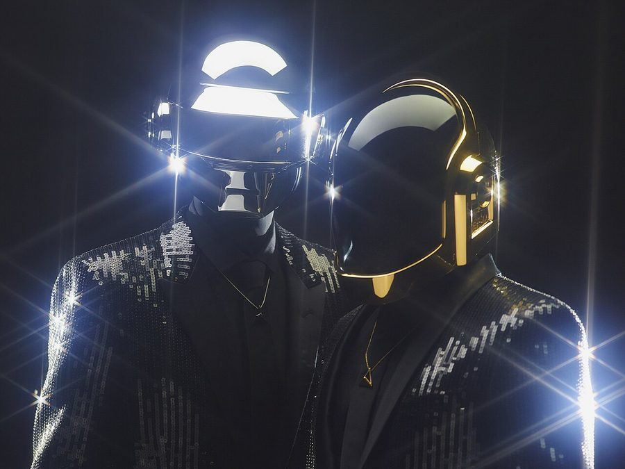

Daft Punk ARE coming to Australia! Presented by Michael Coppel & Modular, supported by inthemix!



This is the big one people… We’ve literally been hanging on the line for years, with the tantalizing possibility of those loveable French robots Daft Punk bringing their spectacular live show to Australia. The mystique that has grown around the group is really quite incredible: we’ve salivated over the YouTube clips, torn our hair out in frustration over those fruitless rumours and debated it endlessly on the forums. Now ITM can confirm the recent talk is true! Here are the facts…
Brought to you by Michael Coppel and Modular, and supported by inthemix, the ‘Never Ever Land’ tour will see the pyramid spectacular landing in Australia for four massive shows this December, with a world-class roster of supports to back up the robot rockers. In addition to the almighty presence of Daft Punk, we’ll also be enjoying sets from a number of acts on the Modular roster. Indie-electro rockers The Presets will be playing one of their last shows before they disappear to record their second album, while rising star Muscles will be clocking in, as will the ubiquitous Bang Gang DJ posse, also warming up the crowds.
As if that wasn’t enough, we’ll have a second international guest in the form of fellow French dance duo SebastiAn & Kavinsky. One of the current stable of French producers on the Ed Banger label, dominating dancefloors around the world, they come from a musical heritage that is inextricably linked to massive legacy left by Daft Punk, so their presence on the bill is appropriate indeed. How’s that for a massive lineup?
As per usual inthemix will be bringing you all the tasty goodies, as we’ll be offering exclusive presales to this massive tour. Stay tuned for another announcement tomorrow! And be prepared to stare in slack-jawed amazement when Daft Punk’s mystical pyramid lights up Australia this December.
Daft Punk will be playing the following shows on the ‘Never Ever Land’ tour, supported by inthemix, Triple J, Drum Sydney, Drum Perth, Inpress and Rave!
Friday December 14th: Sidney Myer Music Bowl, Melbourne
Sunday December 16th: The Esplanade, Perth
Thursday December 20th: The Riverstage, Brisbane
Saturday December 22nd: Homebush Showgrounds Main Arena, Sydney
Tour website: www.nevereverland.com.au
For an idea of what you’ll be in for, check out the YouTube clips below, taken from shows around the globe, as well as a quirky little video set to the tune of Daft Punk’s classic Harder, Better, Faster, Stronger .